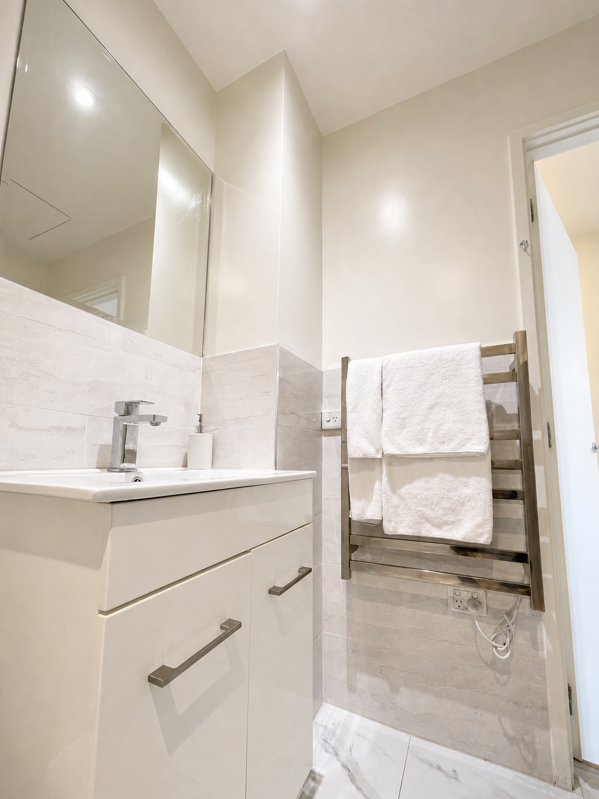
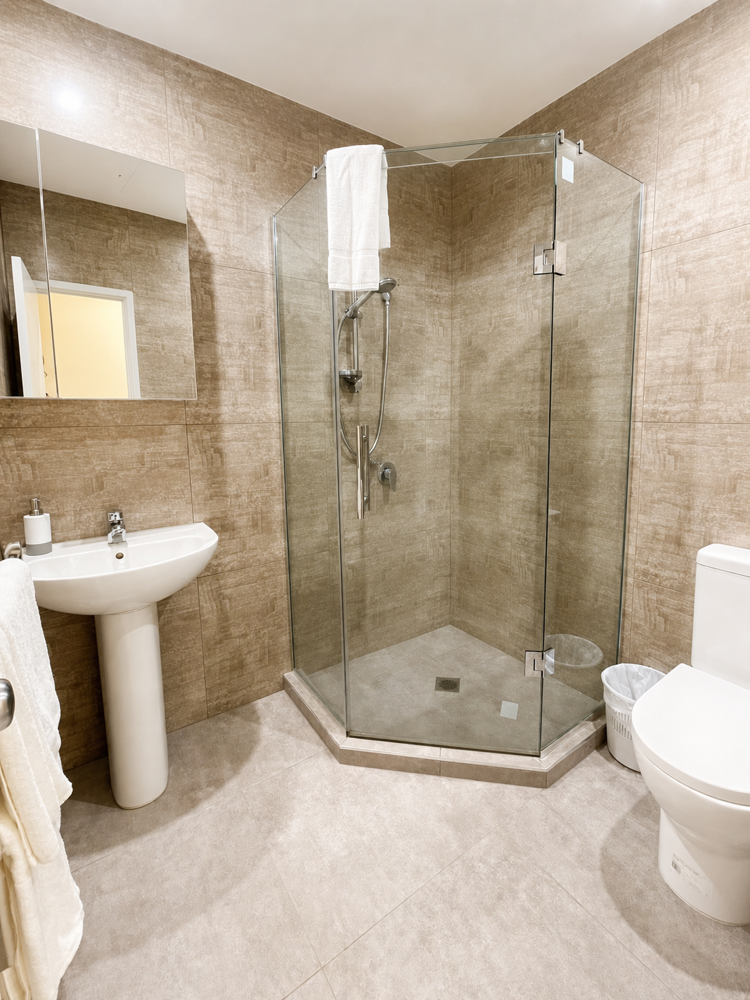

Private room · Maximum 2 guests
Deluxe King
A king bed and more room to settle in, with a workspace and minibar for guests staying beyond a single night.
- Bed
- 1 king bed
- Size
- To be confirmed
- Guests
- 2
- View
- Varies by room





Room features
- King bed
- Air conditioning
- Workspace
- Minibar
- Flat-screen television
- Free fibre Wi-Fi
Questions
How many guests can stay?
The Deluxe King accommodates up to two guests.
Can I work from the room?
This category includes room to work. Confirm desk details with the front desk if required.
Book direct
Ready to stay?
Check your dates or call the front desk with questions.